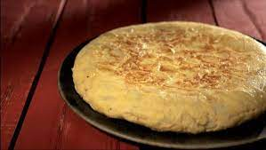

Truita de Patates

Ingredients:
- 4 patates grans
- 1 ceba
- 6 ous
- Oli d'oliva
- Sal al gust
Preparació:
- Pela les patates i talla-les en rodanxes fines.
- Pica la ceba en trossos petits.
- En una paella, escalfa abundant oli d'oliva a foc mitjà.
- Afegeix les patates i la ceba, salpebra amb sal i fregeix fins que estiguin daurades.
- Mentrestant, bateix els ous en un bol gran i afegeix una mica de sal.
- Quan les patates i la ceba estiguin llestes, escorre-les i barreja-les amb els ous batuts.
- En la mateixa paella, aboca la barreja i cuina-la a foc mitjà-baix fins que la part inferior estigui daurada.
- Amb l'ajuda d'un plat, dona la volta a la truita i cuina-la per l'altre costat fins que estigui daurada i coagulada per dins.
- Serveix la truita calenta o freda, i gaudeix-ne!
Consell:
Per a una truita més jugosa, pots afegir una mica de llet als ous batuts abans de barrejar-los amb les patates i la ceba.
Creat a Institut Frederic Mompou per Rafa Lebrón